The Cave in
Images
A living archive of our cellar — the cave, the process, the farms, and the finished cheeses. Every image is from our Burgundy operation.
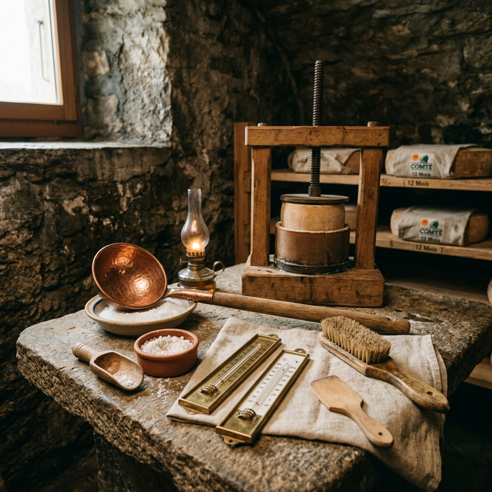
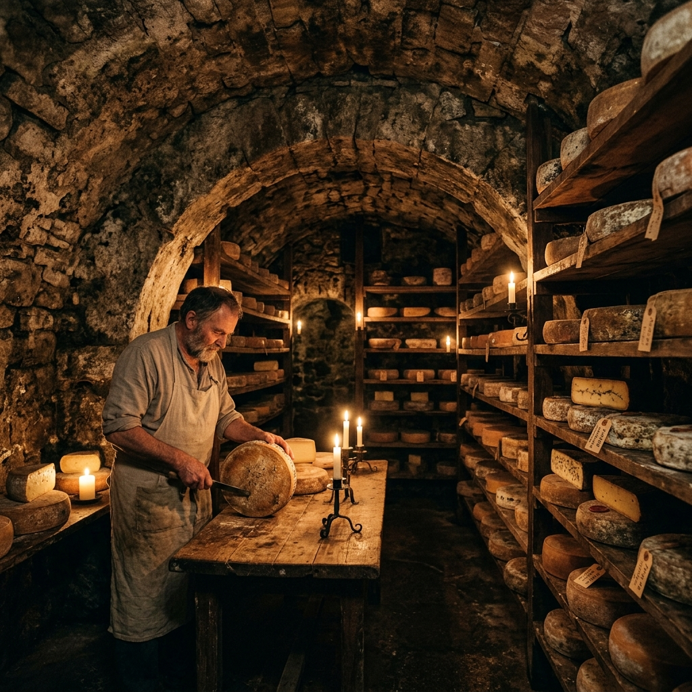


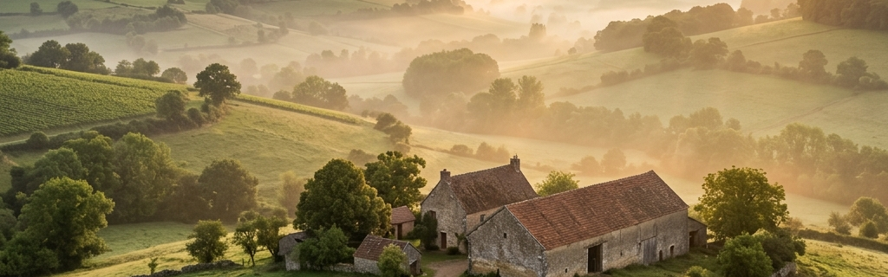

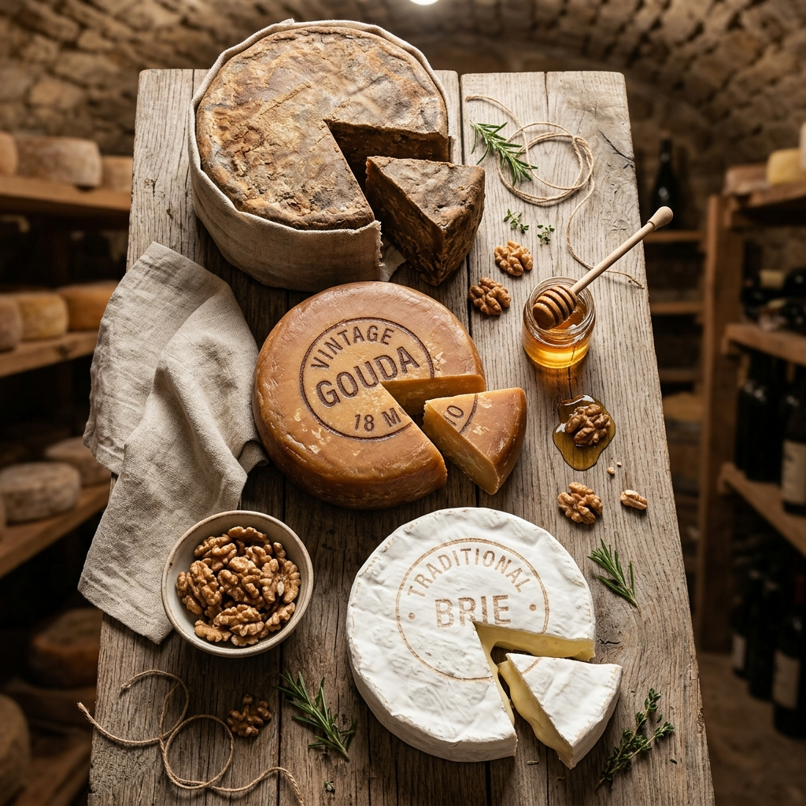
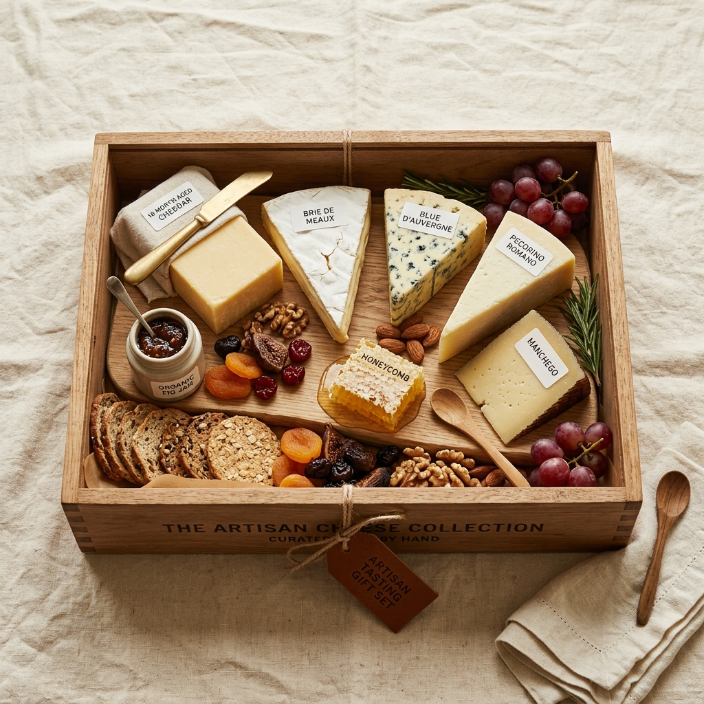
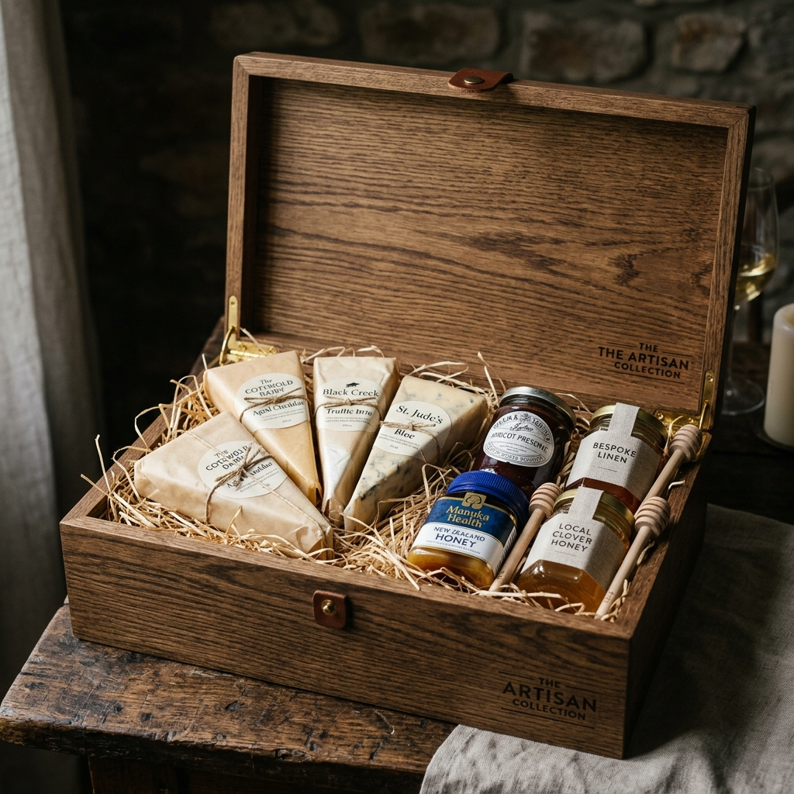
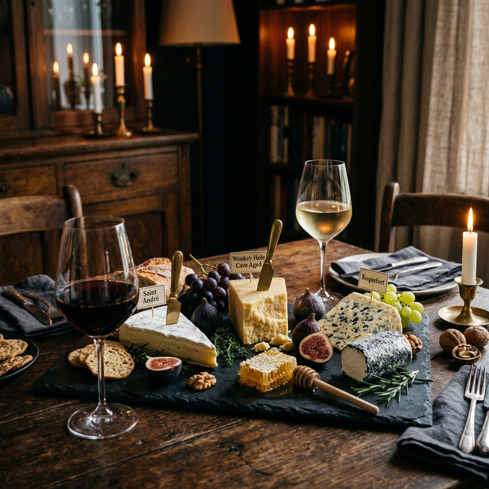

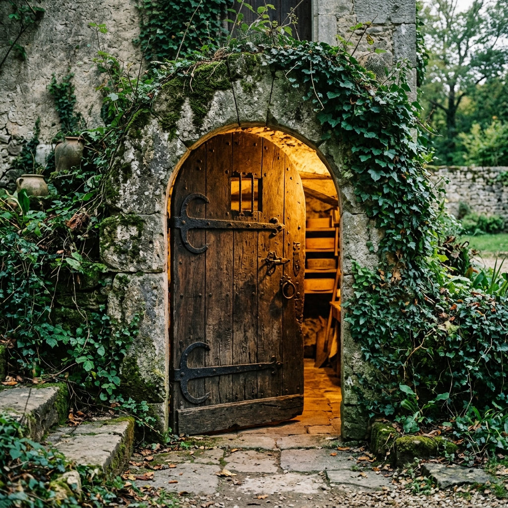
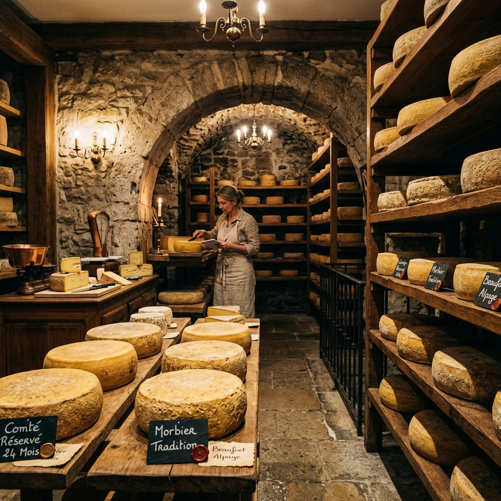
A Day in
the Cellar
The work of an affineur is quiet, daily, and deeply physical. Here is what a typical cellar day looks like.
6:00 — Morning Inspection
Every wheel is walked past and assessed. Unusual rinds are flagged, new arrivals logged, and the cave is read at dawn.
8:00 — Turning & Brushing
Three to four hours of hand-turning and brushing from back to front. Every single wheel is handled individually.
14:00 — Tasting & Release
Afternoon tasting of wheels flagged for release. Detailed sensory benchmarking, box assembly, and dispatch preparation.
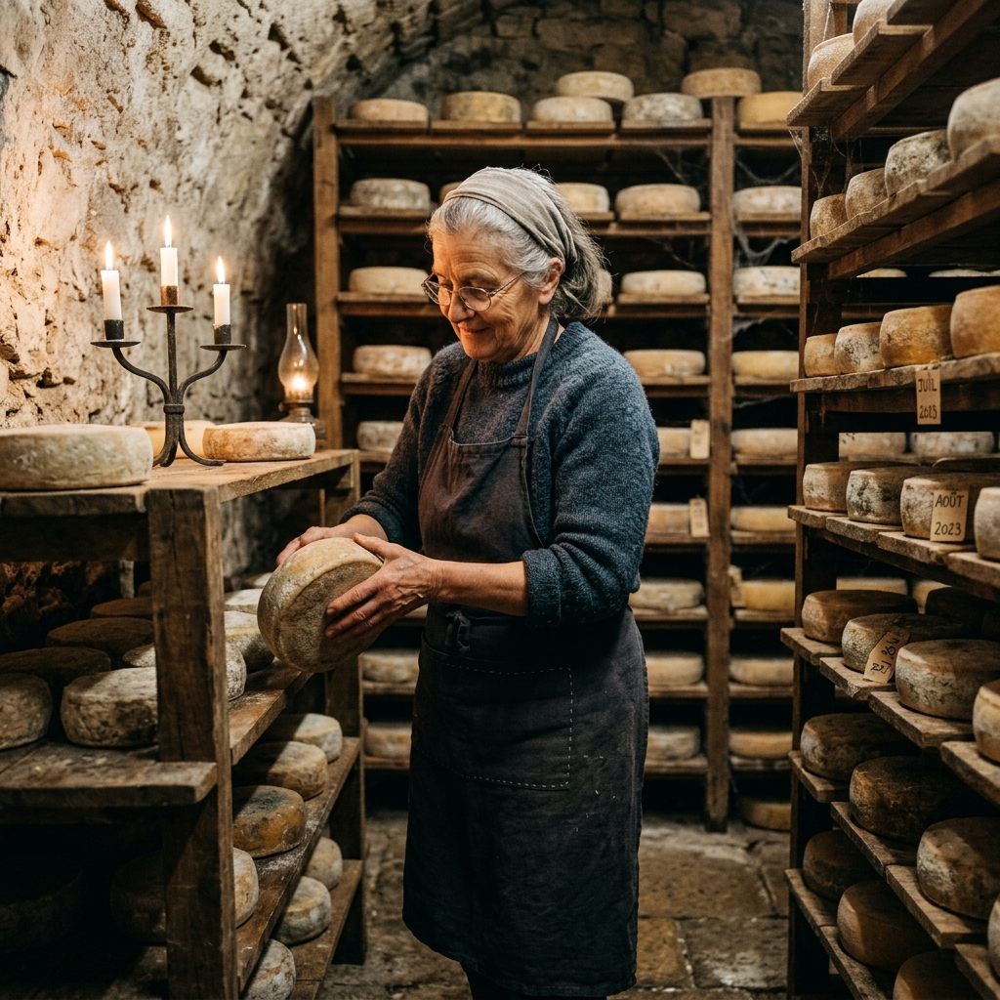
What You Don't
See in the Box
Every wheel that arrives in your tasting box has been turned by hand between 40 and 200 times during its life in our cave, depending on its style and maturation time. It has been brushed, inspected, weighed, and tasted multiple times. The cellar notes card in your box is a summary of that entire journey — written by the person who tended it.
We believe the story matters as much as the cheese. Which is why every box includes the affineur's personal tasting notes — not marketing language, but the actual observations made during the maturation of your specific batch.
Meet the AffineurThe Current
Seasonal Collection
Our cave changes with the seasons — here is what is currently at peak maturation and available for order.
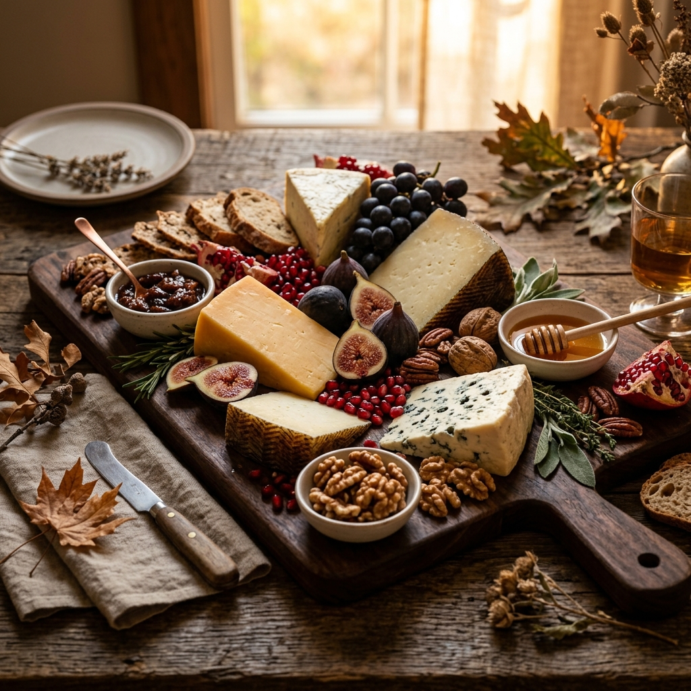
- Grand Vieux de la Cave — 18-month alpine cow, raw milk, butterscotch notes. Limited to 30 wheels.
- Brebis de Vendange — Ewe wheel washed in Pinot Noir marc, funky and fruity. Selected autumn release.
- Cendre du Causse — Ash-rolled goat log, 45 days, lemony cream paste with a rustic charcoal rind.
- Buffalo Stagionato — 90-day water buffalo wheel, first rich harvest release of this autumn season.
- Tomme du Jura — 6-month alpine cow wheel, raw milk, earthy wild mushrooms and autumn forest floor.
- Bleu de la Roche — Blue-veined ewe cheese, rich and buttery, cave-aged for ninety full autumn days.
As Featured
In
"A cellar unlike any other in Burgundy"
"Europe's finest affineur"
Featured, 2022 Edition
Presidia partner, 2019–present
"A visit every cheese lover must make"
Experience More
Than Images
Arrange a private cellar visit and walk the cave yourself — or begin with one of our tasting boxes, a guided sensory journey through the images you've seen here.